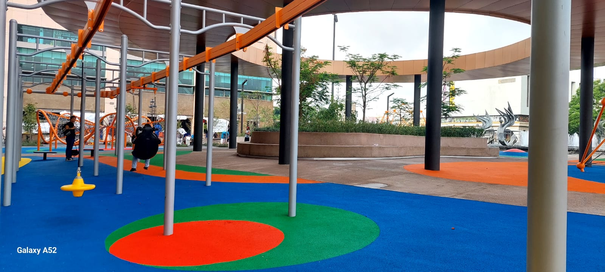
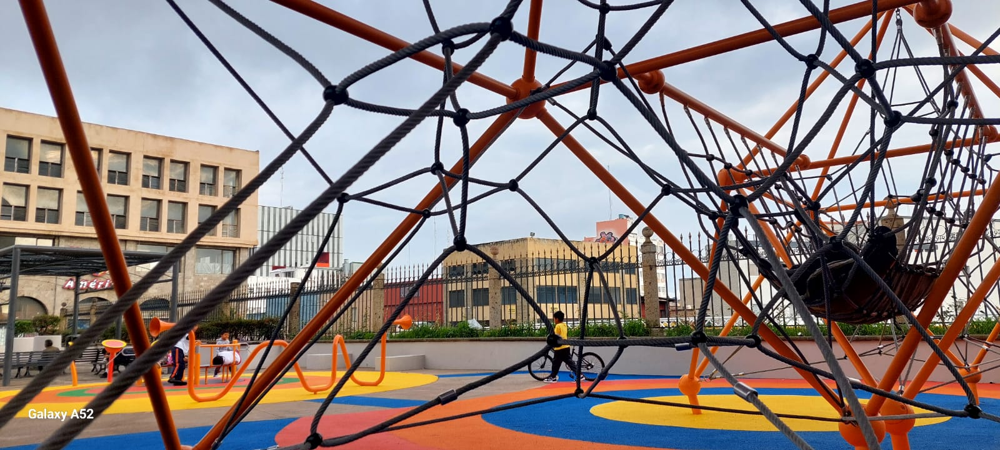
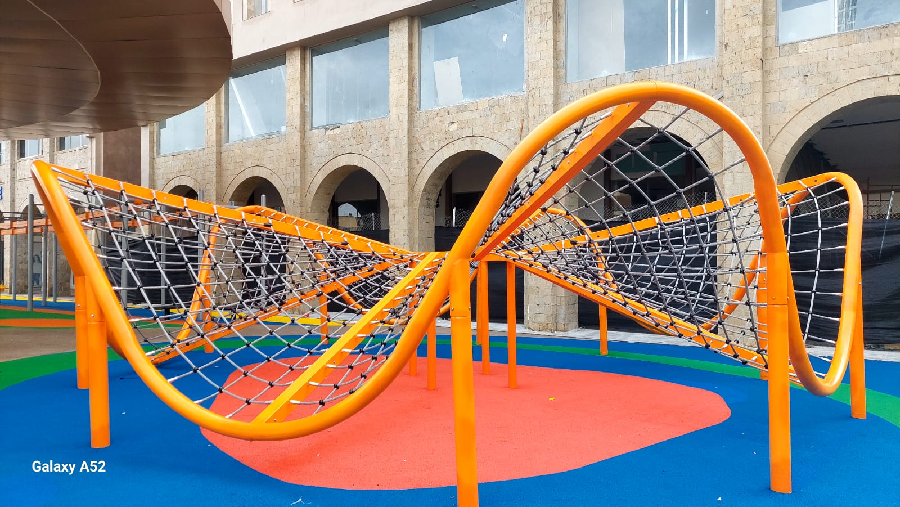
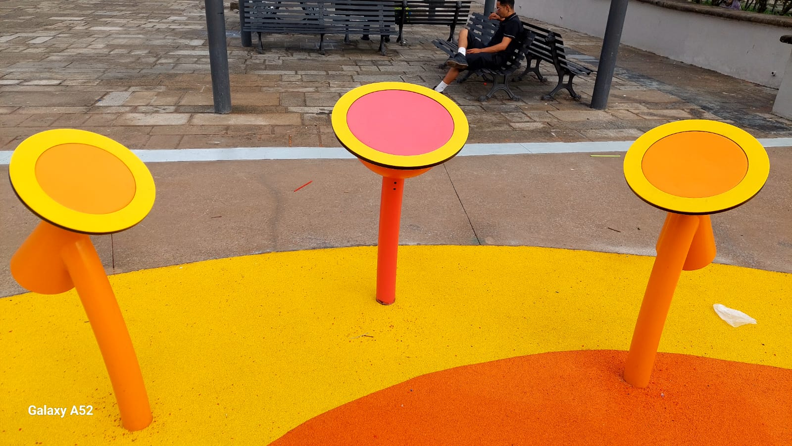
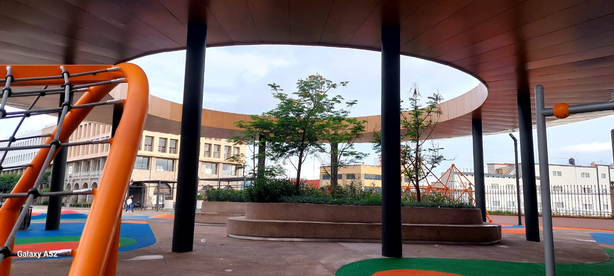

Remodelaciones de Plaza Tapatía

Zona Kids
Se instalaron juegos modernos y seguros para todos los niños y niñas.

Areas seguras
Los pisos estan fabricados de caucho para prevenir caidas o lesiones en los niños.

Accesibilidad universal
Juegos adaptados para todos los niños e incluso para niños con problemas de movilidad o que requieren carriolas. .

Áreas verdes
Cuenta con arbolado, zonas de descanso para disfrutar en familia.
Zona infantil




